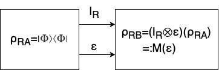
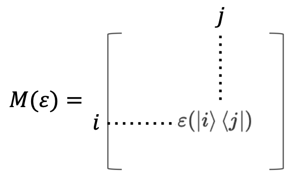

ユニタリで表現できない系、つまり開放量子系も含めた一般の時間発展(一般状態変化または量子通信路とも言う)の記述としてCPTP写像、Kraus表現、Stinespring表現、Choi行列について説明する。
目次
一般状態変化・量子通信路の概要
閉じた系の場合、密度演算子\(\rho\)の時間発展は\(\rho \rightarrow \rho'=U\rho U^{†}\)のようにユニタリ変換によって与えられる。ただし対象系\(S\)が環境系\(E\)と相互作用する場合など閉じた系でない場合、一般に時間発展はユニタリ変換によって表されない。ここでは開放量子系も含めた一般の時間発展(量子通信路とも呼ばれる)の記述について説明する。
一般の時間発展には4つの同値な表現がある。
CPTP写像：量子通信路の公理的な記述
Kraus表現：数学的に扱いやすい
Stinespring表現：ユニタリ発展に対応
Choi行列：Kraus表現と違ってunique
以下では時間発展を写像\(\varepsilon:\rho\in \mathcal{L(H_A})\mapsto \varepsilon(\rho)\in \mathcal{L(H_B)}\)として、それぞれの記述について説明する。
CPTP写像
定義
以下の(i), (ii), (iii)を満たす写像\(\varepsilon\)
アフィン性(線形性)：\(\varepsilon(p\rho+(1-p)\sigma)=p\varepsilon(\rho)+(1-p)\varepsilon(\sigma)\)
確率\(p\)で\(\rho\)、\(1-p\)で\(\sigma\)を用意する場合に満たされて欲しい性質トレース保存(TP)：\(\operatorname{Tr}(\varepsilon(\rho))=1\)
密度演算子の性質 \(\operatorname{Tr}\rho=1\) (確率の和が1であること)に由来完全正写像(CP)：任意の系\(\mathcal{H_C}\)と\(\forall \rho_{AC} \in \mathcal{L(H_A \bigotimes H_C)}\)について\((\varepsilon \bigotimes \mathbb{I}_C)(\rho_{AC})\geq0\)
密度演算子の半正定値性：\(\rho \geq 0\)に由来
CPTP写像は量子通信路の公理的な記述である。 密度演算子の性質の詳細についてはこちら(密度演算子の性質)を参照。
Kraus表現
次のような定理が存在する(詳細は参考文献を参照)。
\(\varepsilon\)が完全正写像\(\Leftrightarrow l\geq d_Ad_B\)個の線形演算子\(V_k:\mathcal{H_A}\rightarrow\mathcal{H_B}\)が存在し\(\varepsilon{(\rho)}=\sum_{k=1}^{l}V_k\rho V_k^{†}\)
さらにトレース保存の条件を加えると\(\sum_kV_k^{†}V_k=\mathbb{I}\)
よって以下のようなKraus表現が得られる
定義
以下を満たす写像\(\varepsilon\)
\(\varepsilon{(\rho)}=\sum_{k=1}^{l}V_k\rho V_k^{†}\)
\(\sum_kV_k^{†}V_k=\mathbb{I}\)
Kraus表現は一意ではないことが知られている。
Stinespring表現
初期状態\(\rho_A, |{0}\rangle_E\)がユニタリによって時間発展すると考える。
定義
ユニタリ変換\(U:\mathcal{H_A}\rightarrow \mathcal{H_B} \bigotimes \mathcal{H}_E\)を用いて
\(\varepsilon(\rho)=\operatorname{Tr}_E(U\rho U^{†})\)
これは任意のCPTP写像が、適切な環境系との相互作用により実現することができるということを述べている。
Choi行列
定義
\(d:=\operatorname{dim}\mathcal{H_A}=\operatorname{dim}\mathcal{H_R}\)となる参照系\(\mathcal{H_R}\)を考える。
ベル状態(最もエンタングルした状態)\(|{\Phi}\rangle:=\frac{1}{\sqrt{d}}\sum_{i=1}^{d}|{i}\rangle \bigotimes |{i}\rangle \in \mathcal{H_R} \bigotimes \mathcal{H_A}\)を通信路\(\mathbb{I}_R \bigotimes \varepsilon\)に入力したときの出力\(M(\varepsilon):=(\mathbb{I}_R \bigotimes \varepsilon)(|{\Phi}\rangle\langle{\Phi}|)\)を考えた時、
\(\varepsilon\)はCPより\(M(\varepsilon)\geq 0\), TPより\(\operatorname{Tr}_BM(\varepsilon)=\mathbb{I}_R/d\)という2つの性質が成り立つ。 このような\(M(\varepsilon)\)をChoi行列と定義する。

Choi行列は定義のままだと理解しにくいので以下に直感的な見通しを与える。
\(M(\varepsilon)=(\mathbb{I}_R \bigotimes \varepsilon)(|{\Phi}\rangle\langle{\Phi}|)=\frac{1}{d}\sum_{i=1}^d \sum_{j=1}^d|{i}\rangle\langle{j}|\bigotimes\varepsilon(|{i}\rangle\langle{j}|)=\frac{1}{d}[(i, j)\text{成分に}\varepsilon(|{i}\rangle\langle{j}|)\text{が並ぶ行列}]\)
つまりChoi行列は各ブロックに\(\mathcal{L(H_A)}\)の基底\(|{i}\rangle\langle{j}|\)の行き先を並べた行列であることが分かる。つまりChoi行列は\(\varepsilon\)の情報を全て含むと言える。

時間発展は以下のように記述できる。
\(\varepsilon(\rho)=\operatorname{Tr}_R[(\rho^T\bigotimes \mathbb{I}_A)M(\varepsilon)]\)
略証
\(\varepsilon(\rho)=\varepsilon(\sum_{i, j}\rho_{i, j}|{i}\rangle\langle{j}|)=\sum_{i, j}\rho_{i, j}\varepsilon(|{i}\rangle\langle{i}|)\)
\([(\rho^T\bigotimes \mathbb{I}_A)M(\varepsilon)]_{(i, j)}=\sum_k(\rho^T_{i, k}\bigotimes \mathbb{I}_A)\varepsilon(|{k}\rangle\langle{j}|)\)より
\(\operatorname{Tr}_R[(\rho^T\bigotimes \mathbb{I}_A)M(\varepsilon)]=\sum_{i, k}(\rho^T_{i, k})\varepsilon(|{k}\rangle\langle{i}|)=\sum_{i, k}(\rho_{k, i})\varepsilon(|{k}\rangle\langle{i}|)\)
確率分布は以下のように記述できる。
入力を\(\rho_\alpha\), 測定に用いる演算子を\(E_\beta\)としたとき、
\(P_{\varepsilon}(\beta|\alpha)=\operatorname{Tr}_A[E_\beta\varepsilon(\rho_\alpha)]=\operatorname{Tr}_{A, sR}[(\rho^T_\alpha \bigotimes E_\beta)M_\varepsilon]\)
参考文献
- 石坂智, 小川朋宏, 河内亮周, 木村元, 林正人, 量子情報科学入門, 共立出版
- 小川朋宏, http://www.quest.lab.uec.ac.jp/ogawa/qmath2020/qmath20200715.pdf, 電気通信大学